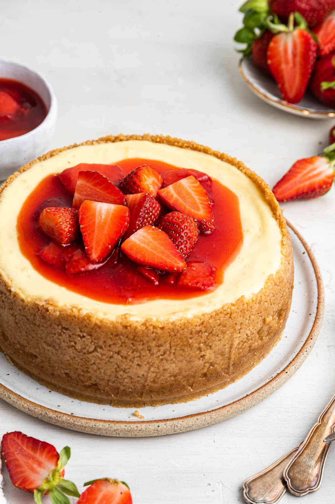

Cheesecake

A smooth and creamy cheesecake with strawberry jam
This cheesecake is a simple homemade recipe. It was created using multiple tests to focus on the perfect texture.
while it is a mix of sweetness and crunchy with a slight hint of fruity added by the strawberry jam, it still has a subtle flavor so you can eat
more than just one slice.
Ingredients:
- Graham crackers - 12 sheets or 1.25 cups
- Melted butter - 5 table spoons
- Granulated sugar - 1/4 cup
- Cream cheese - 1 brick
- Sweetend condensed milk - 1 can
- Pineapple juice - 1 tablespoon
- Vanilla extract - 1 teaspoon
- Strawberry jam
- Strawberries
Steps for the crust:
- Crush the crackers - You can use a food processor, blender, or put them in a ziploc bag and use a rolling pin.
- Mix the sugar - Add the sugar and the crumbs to a bowl and stir.
- Butter time - Add the melted butter to the bowl and stir it with a fork
- Check texture - Make sure everything is combined and lathered in butter.
- Press into the pan - Press the mixture into a pan so that it is tight against the bottom and sides then use your fingers to create an even edge
- Bake the crust - Bake at 350F for 10-13 minutes then allow to cool before adding filling.
Steps for filling:
- Cream cheese - Add it to the bowl and get ready to beat the ingredients together
- Pour the fun stuff in - Add the sweetend condensed milk, pineapple juice, and vanilla extract into the bowl
- Beat it up! - Beat the ingredients together until most if not all of the cream cheese clumps are dissolved.
- Fill it up - Pour the filling into the pie crust
- Pre-heat the oven - 325F
- Baking Time! - once the oven is preheated bake the cheesecake for 20-25 minutes
- Checking the cheesecake - To check if it is ready tap the side gently, if the center jiggles a little it is complete
- (optional) Open the oven door after you turn it off, then leave the cheesecake for an hour so that is cools down gradually preventing cracks.
- Cool down - Take the cheesecake out and let it cool to room temperature
- Add strawberry jam and strawberries on top - this is up to your discretion